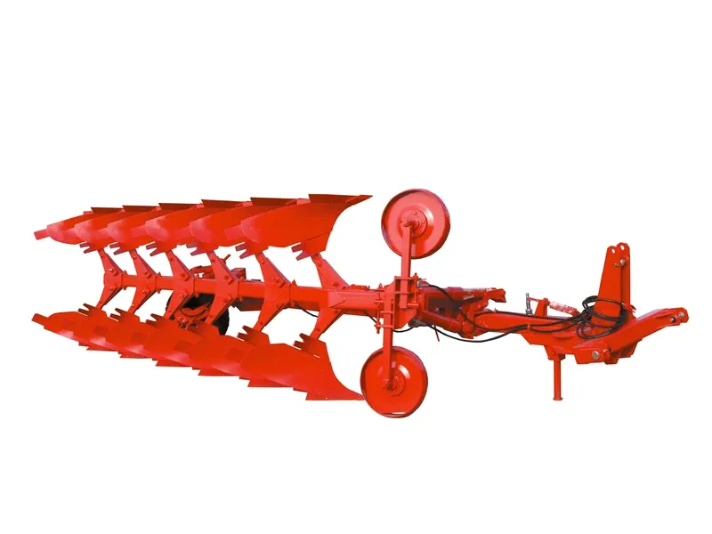

ПЛУГОВЕ · ОБРЪЩАТЕЛЕН

ПРОДУКТ 01 — НАВЕСНИ И ПРИКАЧНИ
Плугове
От три до десет корпуса, за предсеитбена оран на 18–25 см и дълбока оран до 33–37 см. Работят на всички видове почви без каменистите и на наклон до 8 градуса.
- Серии
- ПНР, ППР, ПНРО, ПРО, ПРО-РХ, ПРО-ПП, ППРО
- Закриване на остатъците
- над 95%
- Обръщане
- „Vario“ при обръщателните с 4 и повече корпуса